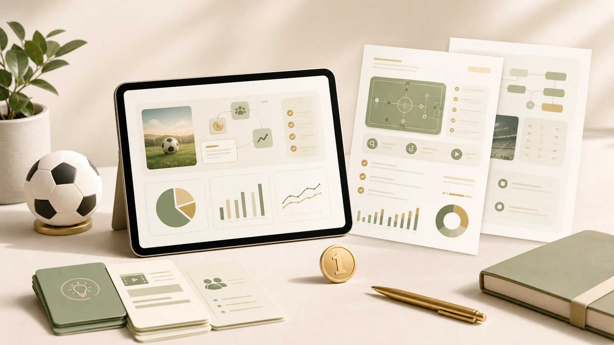
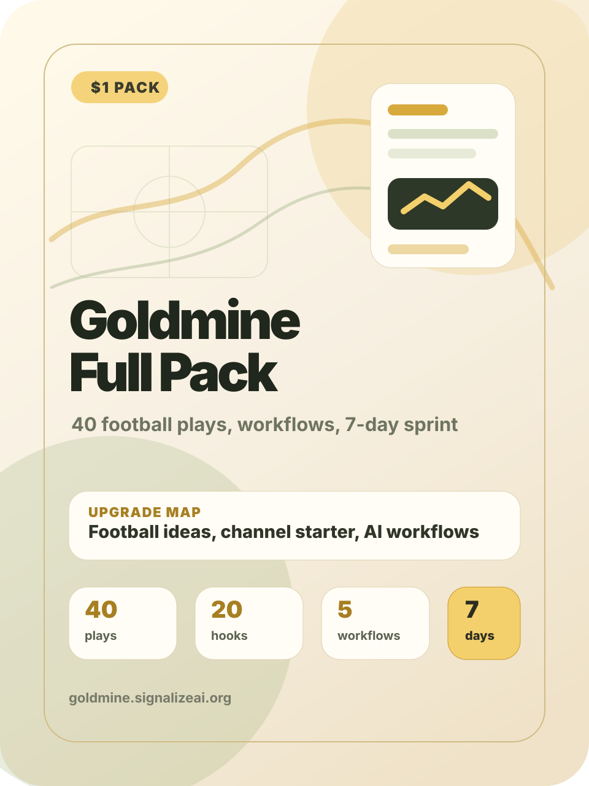
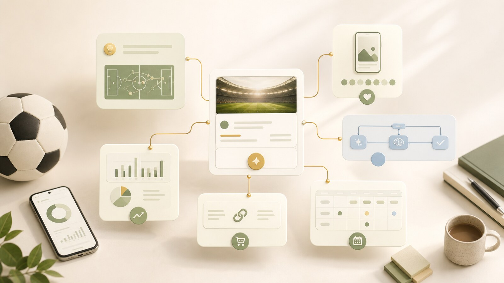
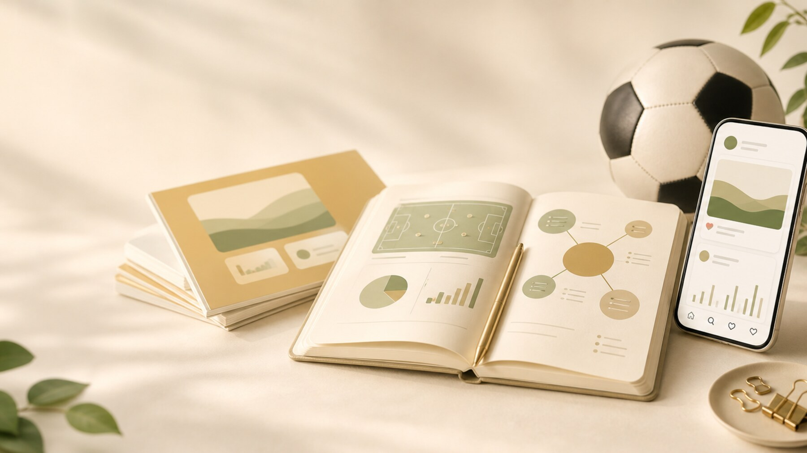

This pack is football-first and AI-content-first. Use it to build viral social posts, fan pages, newsletters, affiliate pages, digital products, or creator services without relying on fake promises.


Goldmine works best when you choose one lane, test it for one week, and only then decide whether to repeat or switch.

Greatest-of-era comparisons, current form arguments, comeback stories.
Ask AI for 3 claims, 3 counterpoints, and 5 slide titles.
Newsletter signups, digital guides, creator tool affiliates.
Run daily polls around simple football questions.
Who starts, who sits, best XI, score predictions, transfer choices.
Use AI to generate 7 poll prompts and follow-up captions.
Affiliate links, community subscriptions, prediction templates.
Fact-check names, dates, stats, and claims before posting.
Turn match-day excitement into practical shopping lists. Snacks, projectors, jerseys, streaming tools, room setup.
Generate a buyer checklist and short social captions.
Budget picks, risky captains, differential players, injury swaps.
Ask AI to format picks into safe, upside, avoid.
Paid spreadsheets, newsletters, communities.
Morning-after recaps, weekend previews, transfer summaries.
Use AI to outline sections, then add your judgment.
Sponsorships, paid archive, tool affiliates.

Tell short stories about iconic moments and forgotten players.
World Cup moments, club eras, tactical revolutions.
Ask AI for story beats, then fact-check names and dates.
YouTube revenue, sponsorships, history guides.
Fact-check names, dates, stats, and claims before posting.
Explain rumors without pretending they are confirmed. Likelihood, fit, money, squad need, source quality.
Use AI to create a rumor scorecard template.
Small nations, academy graduates, comeback seasons.
Generate a 5-part human story structure.
Brand partnerships and long-form YouTube.
VAR drama, missed chances, manager reactions, fan pain.
Use AI to generate caption variants and timing windows.
Merch, paid community, sponsorships.
Explain football terms for new fans.
Low block, overload, xG, half-space, rest defense.
Ask AI for plain examples and test them with real clips you can describe.
Mini-course, glossary PDF, sponsorships.
Fact-check names, dates, stats, and claims before posting.
Turn one stat into a short human insight. Shots, xG, pressures, carries, progressive passes.
Ask AI to translate stats into a fan-friendly sentence.
Top complaints, praise, tactical questions, meme angles.
Use AI to cluster comments, then rewrite responsibly.
Community growth, sponsorships.
Hook prompts, carousel outlines, reel scripts, newsletter sections.
Package 25 prompts by use case and show examples.
Prompt pack sales, Gumroad-style products.
Daily post telling busy fans which games matter.
Best fixture, hidden fixture, player to watch, story angle.
Generate a daily card template and fill it manually.
Newsletter and sports app affiliates.
Fact-check names, dates, stats, and claims before posting.
Create content around football careers and creator gigs. Analyst roles, video editor gigs, sports marketing openings.
Use AI to summarize opportunities and skills needed.
Tactical moments, historic stories, fan reactions.
Generate a script, record voiceover, use diagrams or licensed assets.
YouTube, sponsorships, voiceover services.
Speed, stamina, mobility, recovery, warmups.
Generate a 7-day beginner routine and safety notes.
Fitness app affiliates and coaching leads.
Explain controversial decisions calmly.
VAR, offside, handball, red cards, penalties.
Use AI to create a neutral breakdown template.
Trust-building account, sponsorships.
Fact-check names, dates, stats, and claims before posting.
Teach football vocabulary in multiple languages. Spanish, Portuguese, French, Arabic football phrases.
Generate phrase cards and pronunciation notes.
Transport, food, seating, chants, local etiquette.
Ask AI for structure, then verify with maps and official pages.
Travel affiliates and city guide sales.
Tournament previews, player profiles, club growth.
Use AI to outline profiles, then fact-check thoroughly.
Sponsorships, newsletters, community.
Analyze one manager decision per post.
Lineup changes, pressing style, substitutions, rotations.
Ask AI for pros, cons, and what to watch next.
Paid analysis, sponsorships.
Fact-check names, dates, stats, and claims before posting.
Explain money behind clubs and tournaments. Transfers, wages, sponsorships, TV rights, ownership.
Use AI to simplify concepts and create visual analogies.
Guess the player, lineup memory, club trivia.
Generate quiz options and explanations.
Lead magnets, ad revenue, quiz packs.
Hooks, dates, match themes, post formats.
Use AI to generate a calendar, then curate manually.
Digital product sales and subscriptions.
Explain what managers and players actually implied.
Press conferences, interviews, tactical comments.
Use AI to extract themes and write neutral summaries.
Newsletter, sponsorships.
Fact-check names, dates, stats, and claims before posting.
Audit football pages for hooks, thumbnails, bios, and consistency. Accounts posting often but not converting.
Use AI to create an audit checklist and sample report.
Underrated leagues, tactical fans, fantasy players.
Use AI to create onboarding posts and weekly rituals.
Paid community, sponsorships.
Match previews, player stories, debate hooks.
Generate drafts, then edit for voice and accuracy.
Script packs, retainers.
Curate tools football creators actually use.
Editing apps, design tools, microphones, scheduling tools.
Use AI to compare tools and write honest summaries.
Recurring affiliate income.
Fact-check names, dates, stats, and claims before posting.
Create spreadsheet templates for fans and creators. Fixture tracker, content tracker, fantasy tracker.
Ask AI for columns, formulas, and dashboard sections.
Derby previews, reaction videos, explainers.
Generate 10 variants, test small, keep winners.
Service offers and template packs.
Use this when you want repeatable reels without relying on copyrighted footage.
Use AI for structure and speed. Keep the judgment, fact-checking, and final taste human.
Use this for debate posts, stat explainers, and beginner education.
Use AI for structure and speed. Keep the judgment, fact-checking, and final taste human.
Use this when you want an owned audience instead of only platform reach.
Use AI for structure and speed. Keep the judgment, fact-checking, and final taste human.
Use this for watch-party gear, creator tools, training products, and digital templates.
Use AI for structure and speed. Keep the judgment, fact-checking, and final taste human.
Use this when your audience keeps asking for the same checklist or prompt pack.
Use AI for structure and speed. Keep the judgment, fact-checking, and final taste human.